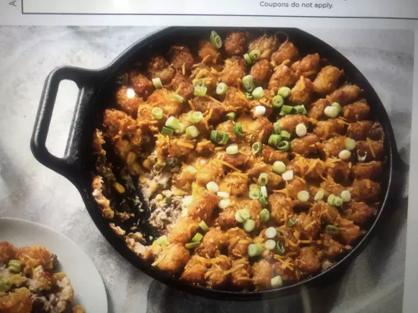

TaterTot Recipe

Description:
This tater tot casserole recipe is quick, easy, and incredibly satisfying. Made with simple and cheap ingredients, it's sure to please everyone at your dinner table.
Ingredients:
- Beef: This tater tot casserole starts with ground beef cooked until it's brown and crumbly.
- Canned soup: A can of condensed cream of mushroom soup adds richness, creaminess, and flavor.
- Seasonings: This casserole is simply seasoned with salt and black pepper.
- Tater tots: Of course, you'll need frozen tater tots!
- Cheese: Shred your own Cheddar cheese for the most delicious results.
Steps:
- Cook the ground beef, then stir in the soup and seasonings.
- Transfer the beef to a baking dish. Top with tater tots, then the cheese.
- Bake until the tots are golden brown.
- Enjoy!